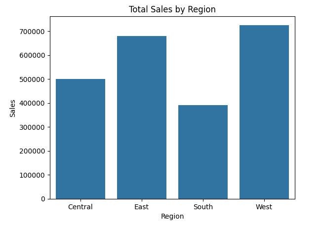
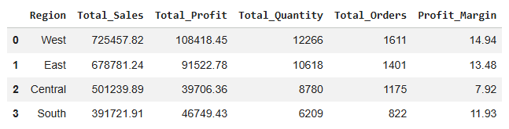
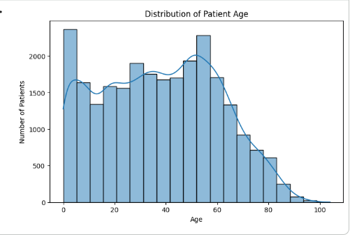
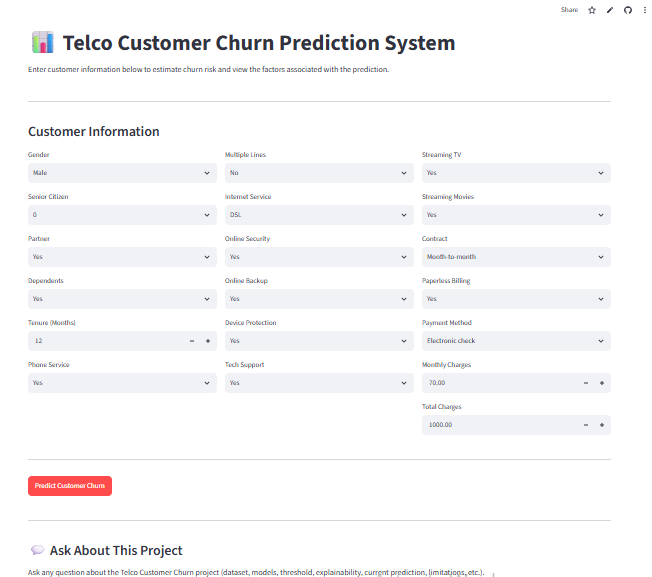
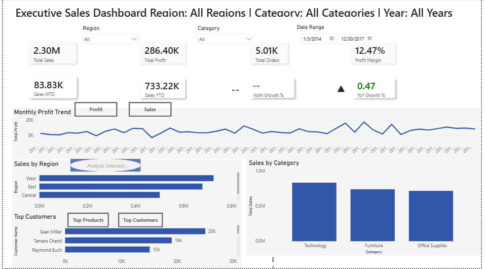

HELLO, WELCOME TO MY PORTFOLIO
I'm Felix Otieno Ochieng'
IT Support Professional | Data Analytics | Data Science
I solve technical problems, explore data, and develop practical technology solutions that create value.
GET TO KNOW ME
About Me
IT Graduate | Technology Enthusiast
I am an Information Technology graduate holding a Bachelor's Degree in Information Technology, with a strong interest in IT support, technical troubleshooting, networking, and technology-driven solutions.
I gained practical experience during a three-month ICT attachment at Uasin Gishu County Government, where I participated in computer maintenance, software installation and maintenance, and end-user technical support.
In addition to my IT support background, I have developed technical competencies in Python, SQL, Power BI, data analytics, and machine learning through structured learning and hands-on projects.
I am passionate about technology, continuous learning, and solving real-world technical challenges.
Education
Bachelor's Degree in Information Technology
Experience
3-Month ICT Attachment
Career Focus
IT Support and ICT Support
Additional Strength
Data Analytics and Data Science
MY TECHNICAL EXPERTISE
Technical Skills
IT Support
- Computer Maintenance
- Software Installation
- Hardware Troubleshooting
- End-User Support
- Windows Troubleshooting
Networking
- IP Addressing
- DNS and DHCP Fundamentals
- Network Troubleshooting
- Ping and Tracert
- Gateway Troubleshooting
IT Service Management
- Incident Management
- Service Requests
- Ticket Prioritization
- Incident Escalation
- SLA Fundamentals
Programming and Data
- Python
- SQL and SQLite
- NumPy and Pandas
- Data Cleaning
- Exploratory Data Analysis
Business Intelligence
- Power BI
- Power Query
- DAX
- Data Visualization
- Business Reporting
Machine Learning
- Scikit-learn
- Classification Models
- Model Evaluation
- Feature Engineering
- Hyperparameter Tuning
MY PROFESSIONAL JOURNEY
Experience
ICT Attachment
Uasin Gishu County Government
Gained practical exposure to ICT support operations and end-user technical assistance within a government organization.
Key Responsibilities
- Assisted with computer maintenance.
- Participated in software installation and maintenance.
- Provided end-user technical support.
- Assisted in resolving basic computer-related issues.
MY PRACTICAL WORK
Featured Projects

Superstore Sales Analysis
Analyzed retail sales data to identify business trends, evaluate profitability, and uncover insights that can support better decisions.

SQL Superstore Analytics
Designed and queried a retail database to analyze sales, profit, customers, products, and regional business performance using SQL.

Hospital No-Show Analysis
Explored hospital appointment data to understand patient attendance patterns and identify factors associated with missed appointments.

Telco Customer Churn Prediction
Developed and evaluated machine learning classification models to identify customers likely to discontinue a telecommunications service.

Executive Sales Dashboard
Built an interactive business intelligence dashboard to monitor sales performance and communicate key business insights.
MY CONTINUOUS LEARNING
Courses & Professional Training
Pandas
Kaggle course covering data manipulation and analysis using the Pandas library.
KaggleIntermediate Machine Learning
Kaggle training covering practical machine learning techniques and model development.
KaggleData Visualization
Kaggle training focused on presenting and communicating insights through data visualization.
KaggleLET'S CONNECT
Get In Touch
Have an opportunity or a project in mind?
I am open to IT Support, Help Desk, and ICT Support opportunities. Feel free to reach out to discuss professional opportunities or collaborations.
Send Me an Email